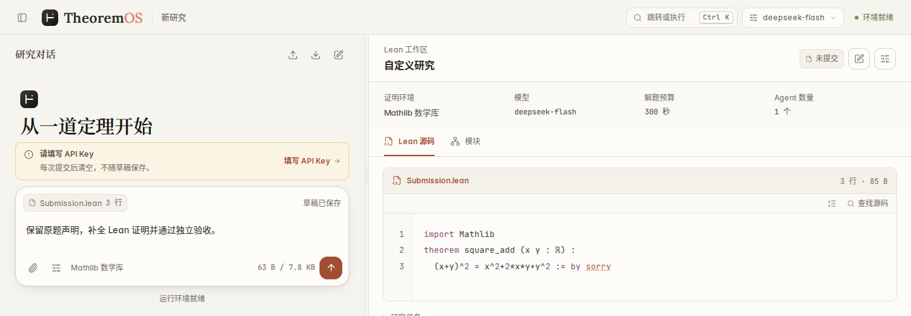
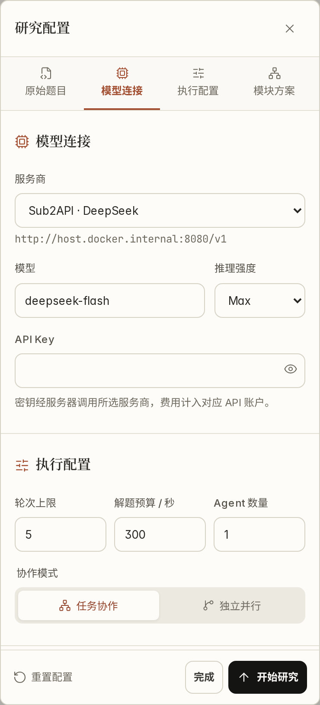

数学 Agent 研究者
在同一道题、同一个模型和同一份预算下，替换搜索、上下文或协作策略，比较哪种做法更有效。每次尝试都留下候选、诊断和用量记录。

输入自然语言或 TeX，查看模型如何理解原题，再追踪证明构造与 Lean 验收。
从自然语言、TeX 或已有 Lean 原题开始，选择自己的模型与预算。陈述含义审核和证明验收分别展示。
在同一道题、同一个模型和同一份预算下，替换搜索、上下文或协作策略，比较哪种做法更有效。每次尝试都留下候选、诊断和用量记录。
直接输入原题，或把带 sorry 的 Lean 定理交给模型补全。查看原文与陈述的对应关系，下载通过独立检查的证明和复核包。
Beta 期间平台免费，模型账单由你承担。默认形式化 10 分钟 / 40 万 Token，随后证明 5 分钟 / 20 万 Token，发送前可调。按已报告用量停止，在途请求可能超额，Token 预算不是金额封顶。
API Key 如何处理一份预设证明的四步回放。源码、检查与修复，连同最终回执一起留存。
查看完整回放记录个具备 Lean-Eval
官方通过记录的证明包
| 题目与原始研究记录 | 研究领域 | 验收与证据 |
|---|
成果来自前身 DeepScientist / DeepScientist Math 及后续工作，包含继续运行与环境迁移。原始归属、官方结果与源码见各题档案。
固定题目、环境、模型与预算，替换一类研究决策。五个研究组件，支持单 Agent 与多 Agent 对照研究。
选择就绪任务，决定继续、重试或停止。把任务排序与路线、预算约束放在一起研究。
M3 · 搜索接口
自然语言入口、进阶 Lean 工作区与证明档案均来自实际界面。未提交预览与已有验收记录分别标注。
打开证明档案
选择 Lean 标准库或固定 Mathlib 环境，在右侧工作区检查候选与诊断。这张截图为未提交草稿。

选择 OpenAI 或已配置的网关，填写该服务商的 Key。默认仅本次使用；登录后可主动加密保存到账号，自然语言与 Lean 入口均可使用已保存的 Key。

在线工作台已开放内测，当前仍为白名单 Beta。
已获准的邮箱可登录，尚未开放自由注册。
GitHub 申请会公开显示，请勿填写 API Key、邮箱等个人信息。不使用 GitHub 或希望私下申请，可发邮件至 liuzhenhao@westlake.edu.cn。
内测中 · app.theoremos.top
evaluated_passed 为证明验收结论在 GitHub 提交内测申请，说明研究用途和想做的题目。我们会在同一条 Issue 里回复你，并请你把登录邮箱发到下面的地址，加入白名单后即可在 app.theoremos.top 用邮箱验证码登录。申请内容会公开显示，请勿填写 API Key、邮箱等个人信息。不使用 GitHub 或希望私下申请，可以发邮件至 liuzhenhao@westlake.edu.cn，写明研究用途和想做的题目。
面向数学研究者、Lean 用户与数学 Agent 研究者，用于把题面转为可核对的 Lean 陈述、构造证明和复盘过程。当前为限量 Beta，不承诺任意题目都能完成。
可以。在线工作台 app.theoremos.top 当前仍为白名单 Beta。登录后可直接输入自然语言、TeX 或已有 Lean 原题，选择模型并查看过程与验收结果。没有内测资格时，可以先看本站的界面预览、预设回放和证明档案。
在工作台选择服务商。OpenAI 用户可在其后台创建 API Key；Sub2API 等网关的账号和 Key 需向该网关管理员取得，不同服务商的 Key 不能通用。「检查 Key 与模型」只读取模型列表，不调用模型；正式任务按服务商价格计费。本站回放不需要 Key。
运行记录归属账号，可下载证明与报告。Key 默认仅本次使用；登录后可主动加密保存到账号，在自然语言或 Lean 入口继续使用，也可随时删除。删除账号立即清除在线内容；维护备份与本窗口用量标识的保留方式详见隐私与条款。